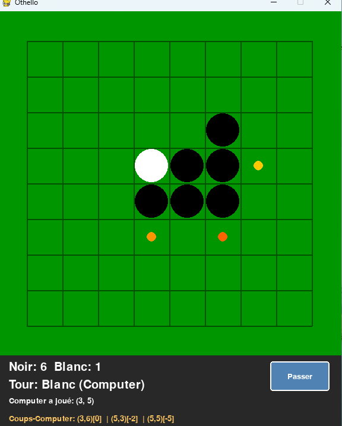

01
Génération des coups
Identifier les coups légaux disponibles à partir de l'état courant du plateau.
Intelligence artificielle
Implémentation d'un joueur artificiel capable de rechercher des coups et de prendre des décisions à l'aide de l'algorithme Minimax et de l'élagage alpha-bêta.

L'objectif est de construire un adversaire capable d'évaluer les différentes possibilités offertes par l'état courant du plateau et de choisir un coup pertinent.
Approche
Identifier les coups légaux disponibles à partir de l'état courant du plateau.
Explorer plusieurs niveaux de décisions afin d'estimer les conséquences des différents coups.
Réduire le nombre de branches explorées sans modifier le résultat de la recherche Minimax.
Compétences mobilisées
Représentation et manipulation de l'état du plateau.
Exploration des états futurs possibles.
Évaluation de la pertinence d'une position donnée.
Réduction du coût de recherche grâce à l'élagage.
Découvrir davantage
Explorez les autres réalisations présentées dans mon portfolio.